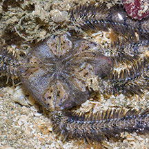
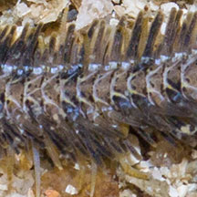
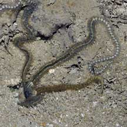
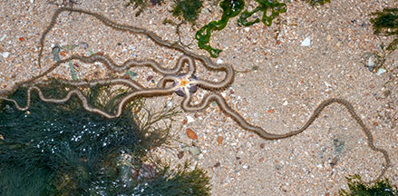
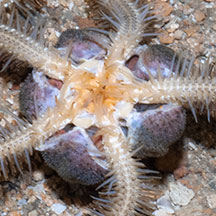
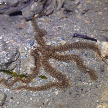
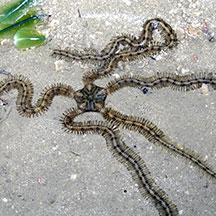
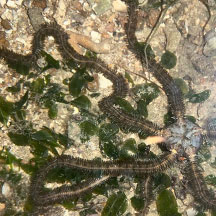

|
|
| brittle stars text index | photo index |
| Phylum Echinodermata > Class Stellaroida > Subclass Ophiuroidea |
| Very
long-armed brittle star Macrophiothrix longipeda Family Ophiotrichidae updated Apr 2020 Where seen? This brittle star indeed has very long flat arms! It is often encountered among coral rubble and under stones at night on many of our shores. Usually, all that can be seen is a small part of its very long arms, while the central disk remains safely hidden in a crevice. The arms retract rapidly when disturbed. It was previously known as Ophiothrix longipeda. Ocassionally one might be seen outside its hiding place. Sometimes upside down in a tangle of its own arms. It's still not certain what this behaviour is about. But as soon as light falls on one, it will rapidly disappear into its hiding place. Features: Disk diameter about 1-2cm, arms about 20-30cm long and about 2cm broad. Disk thick and pentagonal. The very long arms are flat, generally of uniform width throughout, with long flat spines held flattened along the sides (not like a bottlebrush). Large long translucent tube feet emerge from the underside of the arms. The arms sometimes have a faint banded pattern. Generally beige or bluish. Sometimes confused with the Blue lined brittle star which also has very long arms. But it has blue lines along the arms and its spines are more cylindrical. What does it eat? It feeds on suspended particles and to some extent, also scavenges on dead animals. |
 Upperside of central disk. Chek Jawa, Jun 05 |
 Broad flat arm with flat spines and long tube feet from the underside. |
 Disappears rapidly when disturbed. Pulau Sekudu, Jul 06 |
 Pulau Sekudu, Apr 06 |
 Underside. |
| Very long-armed brittle stars on Singapore shores |
On wildsingapore
flickr
|
| Other sightings on Singapore shores |
 Pulau Ubin, Jul 24 Photo shared by Richard Kuah on facebook. |
 Chek Jawa, Jul 18 Photo shared by Jianlin Liu on facebook. |
 Pulau Sekudu, Aug 24 Photo shared by Kelvin Yong on facebook. |
| Terumbu Pempang Laut, Jul 20 |
|
Links
References
|